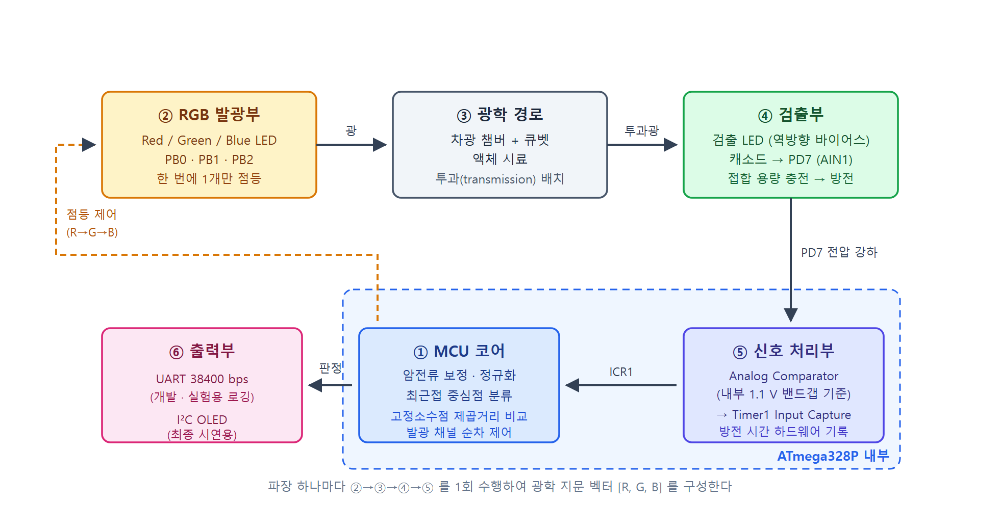
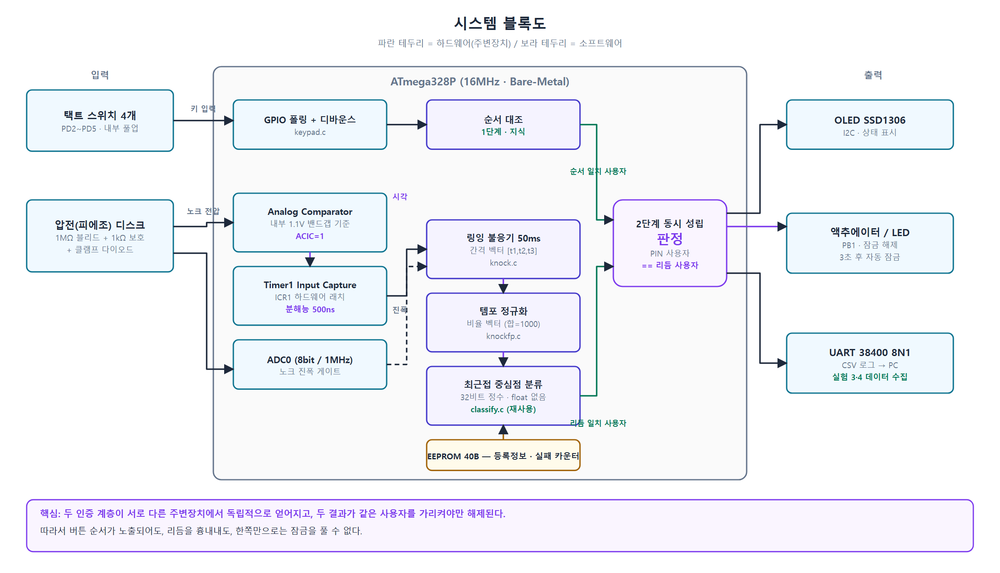

01 · About
소개
안녕하세요, 사람들의 삶을 윤택하게 만들어주는 로봇공학자를 꿈꾸는 한양대학교 융합전자공학부 전민수입니다. 로봇은 회로 위의 신호와 코드 속의 논리가 만나 실제 세상에서 움직이는 결과물이라고 생각합니다. 그래서 하드웨어와 소프트웨어의 경계를 넘나드는 공부를 이어오고 있습니다. C, Java, Verilog로 생각을 논리로 옮기는 법을 익혔고, 회로 설계부터 임베디드 프로그래밍까지 직접 손으로 만들어 보며 이해의 폭을 넓혀왔습니다. 최근에는 로봇의 감각과 움직임을 이루는 센서, 모터 드라이버, 프로세서가 모두 반도체 위에서 동작한다는 점에 주목해, 반도체의 기초 원리까지 공부하고 있습니다. 가장 작은 소자부터 이해하는 엔지니어로서, 일상 곳곳에서 사람을 돕는 로봇을 만들고자 합니다.
Education
- 재학 중 한양대학교 융합전자공학부 학사과정
02 · Skills
기술 스택
Languages
Tools & Platforms
Interests
03 · Projects
프로젝트

LED PEDD · 저비용 액체 광학 분석기
2026 COSS 차세대반도체 MCU 응용 경진대회 출품작입니다. LED를 발광 소자이자 광검출 소자로 함께 쓰는 PEDD 방식으로, 포토다이오드 없이 LED 4개만으로 액체 시료를 판별합니다. 역방향 바이어스로 충전한 검출 LED의 방전 시간을 Analog Comparator와 Timer1 입력 캡처로 측정해 R·G·B 광학 지문 벡터를 만들고, 부동소수점 없이 32비트 정수 연산만으로 온칩 분류까지 수행합니다.

knock2fa · 버튼 시퀀스 + 노크 리듬 이중 인증 잠금
같은 경진대회를 위해 만든 두 번째 시스템으로, '아는 것'(버튼 순서)과 '하는 방식'(두드리는 리듬)을 서로 다른 주변장치에서 독립적으로 읽어 두 결과가 같은 사용자를 가리킬 때만 잠금을 해제합니다. 노크 시각은 비교기 출력을 Timer1 입력 캡처에 직결해 500 ns 분해능으로 잡고, 템포를 정규화한 비율 벡터로 비교해 같은 리듬을 조금 빠르게 쳐도 인식되도록 했습니다. PEDD 프로젝트의 분류 모듈을 그대로 재사용했습니다.
04 · Contact
연락처
궁금한 점이 있거나 함께 일하고 싶으시다면 언제든 편하게 연락해주세요.